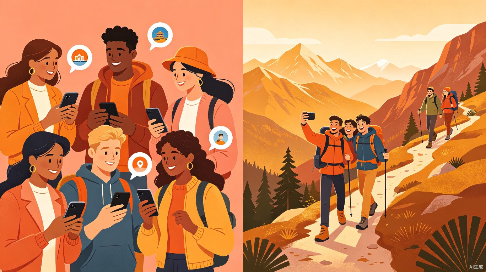
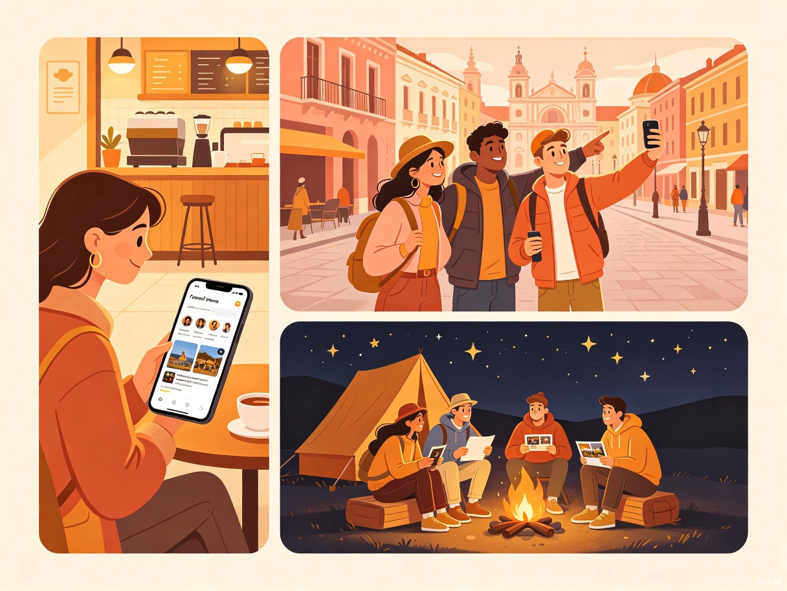

让每一次出发，都有人同行。一款以"兴趣同频 + 圈层匹配"为核心的社交旅行App，用AI算法精准推荐旅行搭子，从行前破冰到行后沉淀，打造完整的社交体验闭环。
传统旅行平台（携程、飞猪等）解决了"去哪儿、怎么去、住哪里"的物理需求，却始终无法回答一个更本质的问题——"和谁去"。年轻人渴望旅行中的深度连接与同频陪伴，但现有的社交平台找搭子效率低、安全无保障。
2026年复旦大学发布的《社交趋势报告》指出，"搭积木式"社交已成为年轻人的社交新形态——像搭积木一样，根据兴趣、场景灵活组合社交关系。在小红书、豆瓣上"求搭子"的帖子日均增长30%，但匹配效率低、信任成本高。一个专门解决"和谁去"的产品，有着真实且迫切的市场需求。
当前用户在寻找旅行同伴时，面临以下结构性困境：
关键数据：调查显示，78%的00后希望通过旅行结识新朋友，但现有工具无法高效满足这一需求。90后和00后用户占伴游服务用户的75%以上。
核心用户为22-35岁的城市年轻白领及大学生，他们热爱旅行、注重体验、渴望社交却苦于找不到合适的同行伙伴。
热爱探索，想假期去云南但室友没空，在小红书发帖无人回应，独自出行又怕无聊。
周末想去周边短途游，朋友时间凑不上，又不想参加千篇一律的跟团游。
常独自旅行但深感孤独，想找到志趣相投的旅伴，发展长期旅行友谊。

发布搭伴需求或浏览AI推荐，通过兴趣标签、旅行风格、性格测评等多维度筛选，找到真正"同频"的旅行伙伴。系统提供行前破冰话题和互动小任务，降低初次见面的社交压力。
共享行程计划、实时位置分享、旅途打卡互动，配合平台设计的社交场景（共同完成挑战任务、交换旅行故事），让搭子在旅行中自然加深了解。
自动生成共同旅行时间线，沉淀照片、故事和评价。双方可选择保持联系或成为"常驻旅伴"，让一段旅程的缘分延续为长期社交关系。
围绕"同频匹配"这一核心能力，产品构建了五大功能模块，形成从发现到沉淀的完整体验链路。
基于兴趣图谱、MBTI人格、旅行偏好（穷游/轻奢/探险）、作息习惯等多维度数据，通过深度学习模型实现精准搭子推荐，匹配成功率远超传统社交平台的随机匹配。
匹配成功后自动生成话题卡片（如"你最难忘的一次旅行""你的旅行必带三件物品"），配合轻量级互动任务（互相推荐歌单、交换美食清单），消除初次见面的尴尬。
多人协同编辑行程计划，集成交通、住宿、景点推荐。支持投票决策、AA记账、实时动态更新，让旅行的"组织成本"趋近于零。
平台设计"旅行挑战任务"（如"一起拍9张不同角度的日落""用当地语言点一顿饭"），让搭子在互动中自然破冰，创造共同记忆。
旅行结束后自动生成精美的共同时间线，整合双方上传的照片、打卡记录和故事。支持一键分享至其他社交平台，让每段旅程都有迹可循。
实名认证 + 社交信用分 + 旅行评价体系 + 紧急联系人机制 + 行程轨迹分享，构建多层安全保障网络，让用户安心出行。
flowchart LR
A[用户注册\n完善旅行画像] --> B[发布需求\n或浏览推荐]
B --> C[AI同频匹配\n多维度筛选]
C --> D[匹配成功\n行前破冰互动]
D --> E[共享行程\n协同规划]
E --> F[旅途中\n社交场景互动]
F --> G[行后沉淀\n记忆时间线]
G --> H[成为常驻旅伴\n或评价反馈]
H --> C
style A fill:#FFF0E6,stroke:#D4652B,color:#2C1810
style C fill:#D4652B,stroke:#B8501E,color:#fff
style F fill:#E89B4C,stroke:#C07A2E,color:#2C1810
style G fill:#E89B4C,stroke:#C07A2E,color:#2C1810
style H fill:#FFF0E6,stroke:#D4652B,color:#2C1810
社交旅行赛道正处于爆发期。墨鱼旅行等先行者已实现累计GMV突破10亿、连续两年盈利。伴游服务2025年上半年订单量同比增长320%，市场增长迅猛。
通过"匹配服务 + 行程交易 + 会员体系"的多元变现模式，商业前景广阔。核心收入来源包括精准匹配服务费、行程交易抽佣、会员订阅、增值服务和广告合作。
| 变现方式 | 说明 | 预期占比 |
|---|---|---|
| 精准匹配服务 | 高级匹配功能（如MBTI深度匹配、兴趣图谱分析）按次或按月收费 | 30% |
| 行程交易抽佣 | 平台内完成机酒、门票、活动预订，抽取服务佣金 | 25% |
| 会员体系 | 月度/年度会员享受无限匹配、优先推荐、专属客服等权益 | 20% |
| 增值服务 | 旅行保险、专业旅拍、私人定制行程等高附加值服务 | 15% |
| 广告合作 | 品牌联合营销、目的地推广、装备测评等商业合作 | 10% |
当前市场尚无真正以"社交匹配"为核心竞争力的旅行产品，这为同频旅行提供了蓝海窗口期。
| 维度 | 传统OTA (携程/飞猪) | 内容社区 (小红书/豆瓣) | 先行者 (墨鱼旅行) | 同频旅行 (本项目) |
|---|---|---|---|---|
| 核心定位 | 交易撮合 | 内容种草 | 组队出行 | 社交匹配 |
| 匹配能力 | 无 | 人工筛选 | 基础标签 | AI多维深度匹配 |
| 社交闭环 | 无 | 弱（评论区） | 中等 | 强（行前-行中-行后） |
| 安全体系 | 交易保障 | 无 | 基础认证 | 信用分+评价+轨迹 |
| 用户体验 | 工具导向 | 信息过载 | 功能粗糙 | 社交优先设计 |
在城市化加速、个体生活日益原子化的今天，超过一半的成年人在日常生活中感到孤独。"同频旅行"的社会意义远超一个旅行工具——它让数字世界的互动变为现实体验，为志趣相投的人提供真实连接的机会。
让"和谁去"和"去哪里"同样重要。在原子化社会中，为陌生人创造基于共同热爱的真实连接，重建人与人之间的信任与情感纽带。
拼车拼房降低人均碳足迹；本地人带路促进深度体验式旅行，减少走马观花式的消费，推动目的地的可持续发展。
响应年轻人新型社交形态，让社交关系不再被"圈子"绑定，而是基于兴趣和场景灵活组合，探索未来社交的新范式。
验证核心假设：用户是否愿意为"AI匹配旅行搭子"付费。
完善社交闭环，引入交易能力。
构建生态壁垒，探索多元变现。
同频旅行 — 不只是一次旅行，而是一段关系的开始
当"和谁去"终于有了答案，每一次出发都将不再孤单。我们相信，旅行的意义不仅在于目的地，更在于同行的那个人。